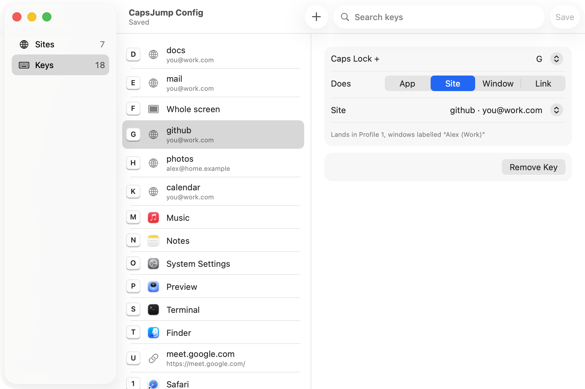
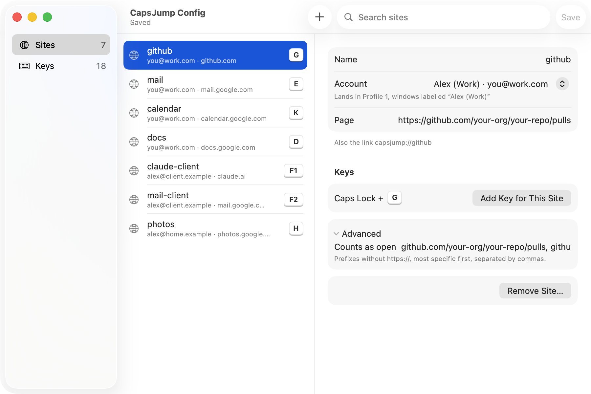
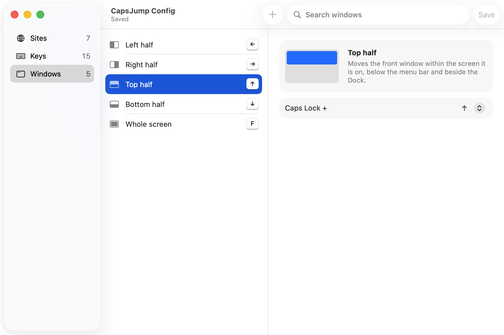
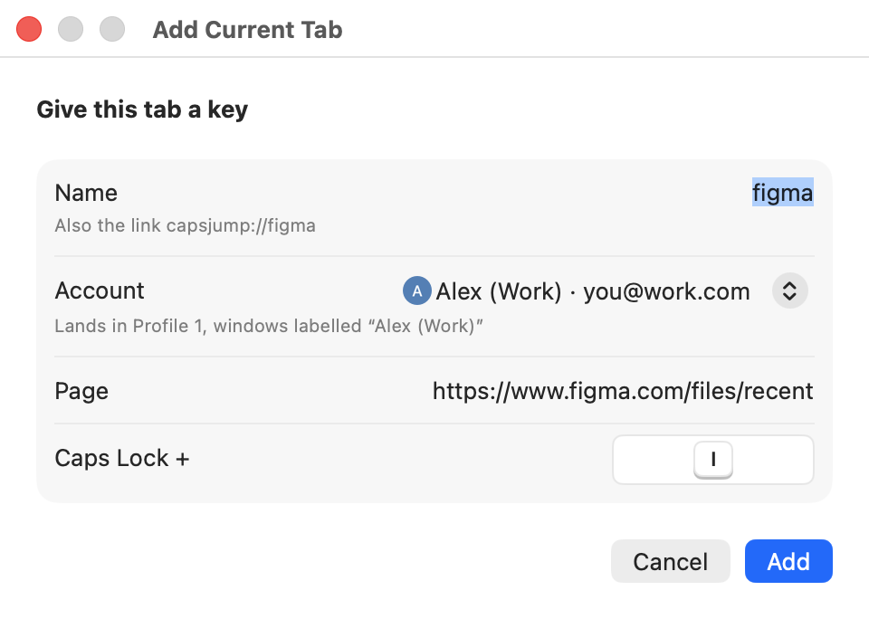

It spent decades waiting for someone to SHOUT. Now hold it and press a key: your terminal is just there, GitHub opens in your work Chrome account, the window snaps to half the screen. One small file says which key does what.
brew install --cask whysosuresh/tap/capsjump
Free and open source, for macOS 13 or later.
Hold Caps Lock, then:
G pull requests, in the work account
← that window to the left half
W the #launch channel in Slack
S your terminal
Apps
Caps + S and your terminal is just there. Not running? It starts. Hiding with no window? It opens one. No more fishing in the Dock.
Chrome accounts
Caps + G lands on the GitHub tab in your work account. Not your personal one. Never your personal one. No tab yet? It opens one in the right place.
Windows
Caps + an arrow sends the front window to that half of the screen: ←→↑↓. Caps + F and it goes big. Rather other keys? Press the one you want, or turn any off.
Links
Caps + W drops you into a Slack channel, a Zoom room or any web page, in the app that owns the link. Bookmarks, but with legs.
See it
Rather click than write YAML? Pick Edit Config… in the menu bar and every key and site is right there.

Every key that takes you somewhere, on one list in keyboard order. To change a key, click it and press the new one, with Caps Lock or without; a key that's taken says what it does already. Type to search.

Each site with its own icon, its Chrome account (with the picture Chrome shows for it) and the keys that land on it. Rename one and its keys come along.

Every move a key can make, with the key that makes it. Press a new one, or Delete to turn it off.

Page open in Chrome? Add Current Tab… names it, knows the account, offers a free key. Click Add.
One file, ~/.capsjump.yaml
Each key does one thing, and the window above saves straight to this file, checked by the same rules as you type. Prefer a text editor? Open Config File, and the file looks like this:
Key names: a–z, 0–9, f1–f12 and the arrows. A file with no keys: leaves Caps Lock as it is.
Install
brew install --cask whysosuresh/tap/capsjump
open -a CapsJump
CapsJump opens a short Welcome window, three steps that tick themselves as you go:
Let CapsJump hear Caps Lock. macOS asks with its own box: click Open System Settings there and turn CapsJump on. The step ticks the moment you do.
Choose your keys. One click turns on the starter keys (the arrows snap the front window to a half, F fills the screen), or set up your own. While CapsJump has keys, Caps Lock no longer types capitals; Shift still does.
Try it. Click any window, hold Caps Lock and press ←.
Chrome accounts and notifications are there too, each asked only when you click it, and a switch for starting at login, on until you turn it off. Close the window whenever you like: CapsJump's mark in the menu bar carries a small dot until it's set up, and its menu starts with Finish Setting Up…. From a terminal, capsjump setup opens the same window and capsjump init writes the starter ~/.capsjump.yaml.
Good to know
Chrome only, for sites. Site keys work with Google Chrome and its accounts; app, window and link keys work with anything.
Site icons and account pictures come from Chrome. Each site shows the icon Chrome has already saved on your Mac for that account, and each account the picture Chrome shows for it. Nothing is fetched; a site Chrome hasn't shown there yet keeps a globe.
Windows stay on their screen. A window snaps within the screen it is on; moving it to another screen isn't a key yet.
Not while typing a password. macOS keeps every app's shortcuts out of password fields; the keys work again as soon as you leave one.
Miss SHOUTING? Hold Shift, like everyone else. Or pause or quit CapsJump from its icon in the menu bar, and Caps Lock goes back to its old job at once.